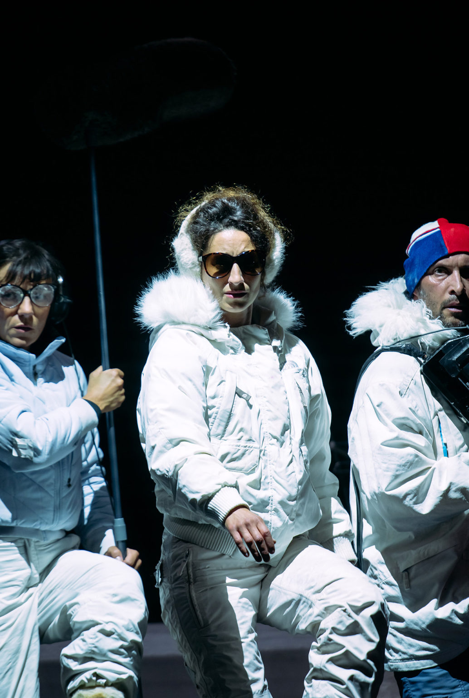

Retour de salle
Dimanche : retour de salle sur une fable climatique visuelle
Théâtre des Tanneurs · Focus & Chaliwaté · 4 mars

Il y a des spectacles qui vous suivent longtemps après que le rideau est tombé. Dimanche, présenté au Théâtre des Tanneurs le 4 mars dernier, est de ceux-là.
Créé en 2019 par les compagnies bruxelloises Focus et Chaliwaté — artistes associés aux Tanneurs — ce spectacle sans paroles revient pour la cinquième fois dans notre ville après une carrière internationale remarquable : New York, Sydney, Tokyo… Autant dire que Bruxelles accueille un ovni théâtral qui a déjà conquis le monde. Et en sortant de la salle, on comprend très vite pourquoi.
Deux histoires pour un seul monde qui s'effondre
Dimanche tisse en parallèle deux récits qui ne se croiseront jamais — sauf dans nos têtes.
D'un côté, un couple et sa vieille mère s'acharnent à maintenir le rituel sacré du déjeuner dominical. Dehors, la chaleur est écrasante, les objets fondent, les vents soufflent. Mais qu'importe : on sert un flamant rose au four et la vie suit son cours.
De l'autre, une équipe de reporters animaliers sillonne une planète à l'agonie pour filmer les dernières espèces vivantes. Tempêtes, glaciers craquants, ouragans : ils avancent, obstinés, caméra à l'épaule.
Le contraste est saisissant — et c'est précisément là que réside le génie de la pièce. Cette humanité à deux visages incarne quelque chose de profondément vrai : notre capacité collective à voir la catastrophe et à mettre le couvert quand même. Une phrase de Calvin et Hobbes, citée par l'équipe, résume l'esprit du spectacle avec une ironie mordante : « Ce n'est pas du déni. Je suis juste sélectif dans la réalité que j'accepte. »
Un langage scénique à part entière
L'absence totale de paroles aurait pu être une contrainte. Ici, elle devient une force.
Sans mots, chaque geste porte le poids du monde. Les trois interprètes — Julie Tenret, Sicaire Durieux et Sandrine Heyraud — sont tour à tour comédiens, manipulateurs de marionnettes, paysages vivants. Leurs corps deviennent montagnes, falaises, vagues, rafales de vent. On pense au cinéma muet de Buster Keaton, à l'univers méticuleusement composé de Wes Anderson : chaque plan semble pensé comme une image fixe qui prendrait vie.
Les marionnettes, signées Joachim Jannin (WAW Studio!) et Jean-Raymond Brassinne, atteignent un réalisme qui coupe le souffle. L'ourse polaire grandeur nature, manipulée avec une grâce confondante, est l'une des images les plus poignantes du spectacle. On oublie complètement les bras et les mains qui la font vivre.
Les effets d'échelle achèvent de construire cette magie : un minuscule van Volkswagen traverse des montagnes faites de corps humains. Du micro au macro, du domestique au planétaire — tout s'articule avec une précision horlogère.
Ce qui reste après
Certaines scènes continueront de me hanter un bon moment.
Le trio de reporters transformant leurs corps en paysage arctique, où le minuscule van fraye son chemin entre des genoux-montagnes et des épaules-falaises. Le repas familial où les assiettes se soulèvent sous les bourrasques. Et surtout, ce final sous-marin — poétique et inquiétant à la fois — où des méduses naissent de mains entrelacées dans l'obscurité, et où des objets flottent comme les débris d'un monde englouti.
L'engagement physique des interprètes est époustouflant. La création sonore de Brice Cannavo et la création lumière de Guillaume Toussaint Fromentin font ressentir dans la salle la force du vent, la morsure du froid, la montée des eaux. Et les vidéos de Tristan Galand complètent ce dispositif en brouillant les frontières entre scène et documentaire.
Un appel artisanal dans un monde saturé d'effets numériques
À l'heure où nos écrans nous abreuvent d'images de synthèse et d'effets spéciaux, Dimanche fait le pari inverse : tout est fabriqué à la main, avec des corps, des objets, des tissus, de la lumière.
Et c'est précisément cette fragilité assumée qui rend le spectacle si puissant. Parce qu'on voit le travail, l'artisanat, l'intelligence humaine derrière chaque illusion. Parce que cette ourse polaire en tissu, on sait que des mains l'ont cousue, que d'autres mains la font vivre soir après soir — et pourtant, on y croit.
Dimanche a remporté deux prix Maeterlinck en 2020 (Meilleur spectacle et Meilleure création artistique et technique), salué par The Guardian et le New York Times. Mais au-delà des récompenses, c'est un spectacle qui fait ce que le meilleur théâtre fait toujours : il nous parle de nous, avec tendresse et urgence, et on repart moins indifférents qu'à l'entrée.
Spectacle de Focus et Chaliwaté, en association avec le Théâtre Les Tanneurs. Durée : 1h15. Dès 10 ans.
Écriture et mise en scène : Julie Tenret, Sicaire Durieux, Sandrine Heyraud. Marionnettes : Joachim Jannin (WAW Studio!) et Jean-Raymond Brassinne. Scénographie : Zoé Tenret. Lumière : Guillaume Toussaint Fromentin. Son : Brice Cannavo. Vidéo : Tristan Galand.